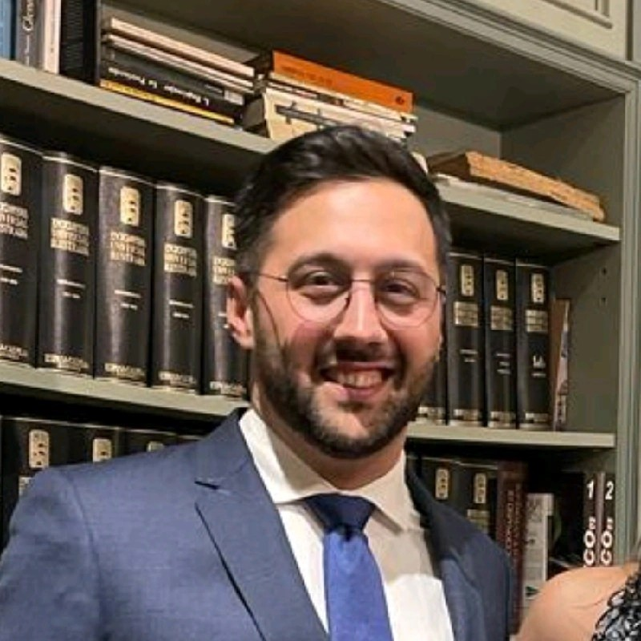

A human-scale firm, a long-term standard of care
Arius was founded on the conviction that important wealth decisions require a global, legible and coordinated approach — and that they deserve an adviser committed for the long term.

Darius Rafiee
“True wealth lies not only in the assets one holds, but in the ability to organise, protect and pass them on.”
Wealth is not reducible to a financial portfolio. It reflects a family history, an entrepreneurial venture, capital to be preserved and a vision to be handed down. Behind every wealth decision lie legal, tax, financial, human and often international considerations that cannot be addressed in isolation. It is this global vision that has guided Darius Rafiee's approach for nearly ten years.
A lawyer by training, holding a degree in business law and taxation complemented by a business school education, he built his expertise at the crossroads of law, finance and wealth strategy. This dual background allows him to approach each situation as a whole, where the legal, tax, financial and family dimensions are inseparable.
Over the course of his career, he has advised company directors, families of wealth, entrepreneurs and private investors, in wealth engineering as well as in private banking and family office. His experience as a Family Officer in Monaco, serving an international high-net-worth clientele, profoundly shaped his view of the profession: to define a global wealth strategy, to coordinate all the professionals involved with a single family — lawyers, notaries, accountants, tax advisers, private banks and asset managers — and to ensure the coherence of decisions over time.
He has advised High Net Worth Individuals (HNWI) and Ultra High Net Worth Individuals (UHNWI) on complex wealth matters, and taken part in structuring estates representing several hundred million euros of assets, in setting up dedicated investment solutions and in advising institutions. These engagements forged an approach grounded in coordination, discretion and a global vision of wealth.
Today, he supports families, business owners and entrepreneurs in France and internationally, with particular expertise in cross-border situations between France and Spain. Every engagement follows the same principles: to preserve wealth, structure its growth, anticipate its transmission and put in place family or corporate governance suited to long-term objectives.
This vision is the origin of Arius Conseil.
The firm draws on the standards of independent family offices, offering global support founded on independence, confidentiality and coordination. More than a wealth adviser, Darius Rafiee acts as a strategic partner tasked with orchestrating every dimension of his clients' wealth: legal and tax engineering, strategic asset allocation, real estate, transmission, governance, international mobility and the coordination of their advisers. Each strategy is bespoke, with a single priority: to serve the client's interests exclusively.
Because everyone's expectations differ, the mode of engagement is itself adaptable. Some clients prefer a relationship based exclusively on advisory fees, guaranteeing complete independence of recommendations. Others wish to combine this advisory role with the implementation of wealth solutions selected on an open-architecture basis. In every case, transparency of remuneration, alignment of interests and the absence of conflicts of interest are the foundations of the relationship.
Four principles
Clarity
Making complex situations legible. A client should always understand what is being recommended, and why.
Discretion
Wealth matters are intimate matters. Confidentiality is not an option: it is the foundation of the relationship.
Rigour
Every recommendation rests on documented analysis, a respected regulatory framework and complete transparency on the terms of engagement.
Continuity
Wealth strategies are judged over time. Arius commits for the long term, alongside its clients and their advisers.
Let's get acquainted
A first meeting, confidential and without obligation, to understand your situation and present the way the firm works.
Arrange an initial conversation